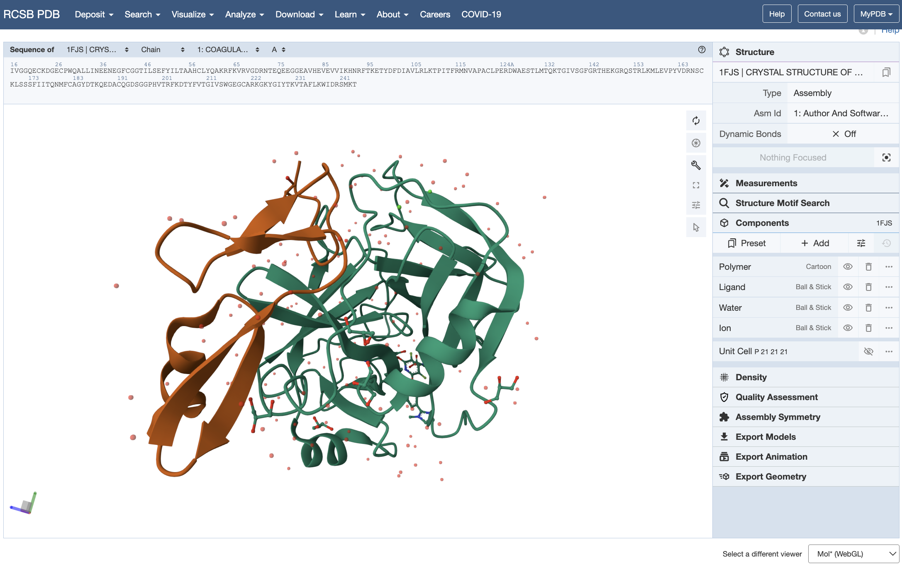
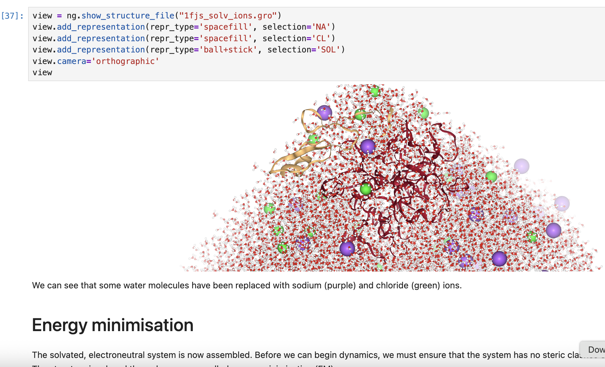
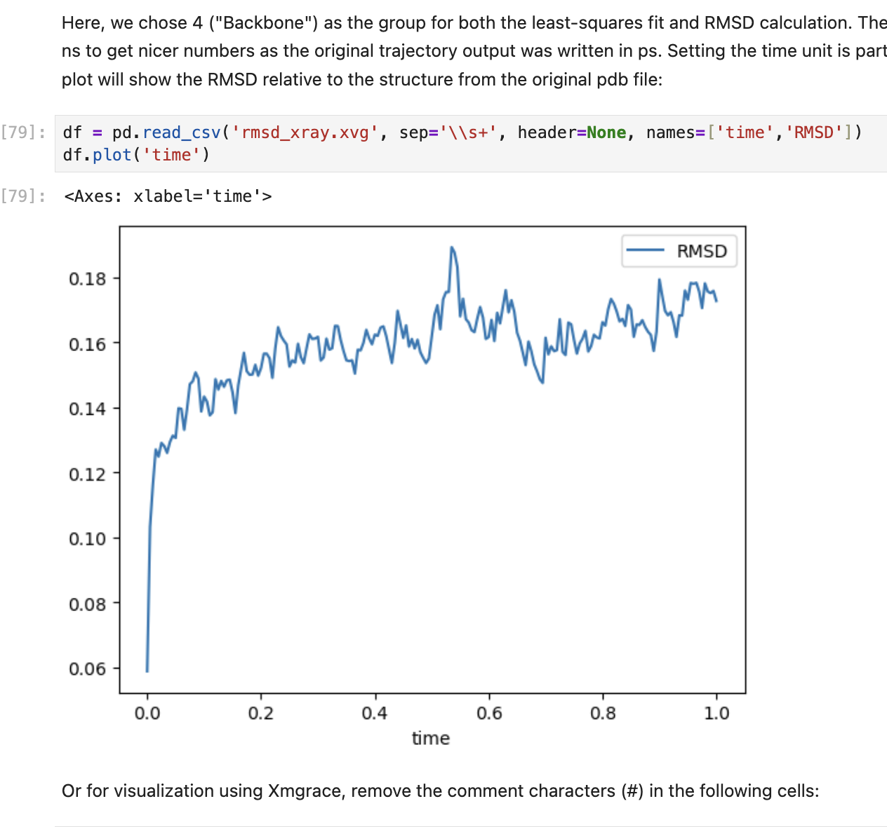
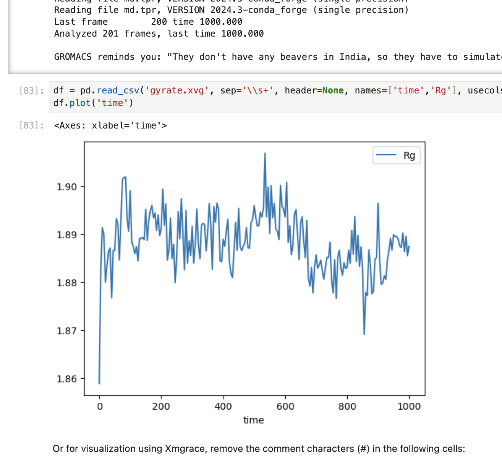

Modeling protein complex and drug carrier stability with Molecular Dynamics
Background
Once favorable docking behavior of a protein-drug complex is established - for example, successful binding of lecanemab
to Alzheimer's amyloid-β plaques, making it ready for removal by microglia - we need to establish that the complex is stable
in the physiological (in-vivo) environment where it is supposed to act.
Additionally, biomolecules for drug delivery (eg. liposomes, dendrimers, micelles, or protein-based nanocarriers) should
have specific behavior to assess suitability - for triggered delivery, slow-release or targeted delivery,
pH-responsive delivery (e.g., tumor or endosome targeting) or potential for cellular uptake through membranes.
Simulating in-vivo behavior in-silico
Predicting and evaluating the behavior of drug-protein complexes and drug-carrier biomolecules
before moving to more resource-intensive in-vitro or in-vivo studies offers a powerful and cost-effective means
to reduce failure rates, accelerate discovery, and promote more targeted and efficient pharmaceutical development.
Molecular Dynamics (MD) simulations provide atomic-level resolution on binding modes, conformational changes,
hydrogen bonding, hydrophobic interactions, and allosteric effects that are difficult to capture experimentally.
They can also eliminate unstable or non-specific binding, to eliminate weak candidates early in the development process.
For drug delivery systems, they can evaluate encapsulation efficiency, release profiles, stability of drug-carrier interactions,
and interaction with biological membranes.
MD is also highly scalable because a variety of physiological / in-vivo conditions (e.g., temperature, pH, ion concentration)
can be used to mimic realistic environments.
Implementation
In this study, the behavior of Factor Xa - a protein playing a critical role in the formation of blood clots - is simulated in a simple aqueous system. Stability is then analyzed using RMSD (Root Mean Square Deviation) from the reference structure and Rg (Radius of Gyration) for compactness. The steps are as follows:
- GROMACS was used as the MD system.
- The crystal structure of Factor Xa is available as 1FJS in the PDB. /li>
- A simulation "box" (3D cell) is created and filled with water and ions to neutralize the system.
- Energy Minimization (EM) is run to relax the system to remove steric clashes.
- The system is equilibrated to stabilize temperature at constant volume, and stabilize pressure and density at constant temperature and pressure.
- A production run performs the actual MD simulation to generate trajectories.
- Finally the system is visualized using tools for RMSD, Rg and energy plots.
Screenshots
   Demo Video
Github repo
View project artefacts on GitHub: https://github.com/yourusername/project-repo